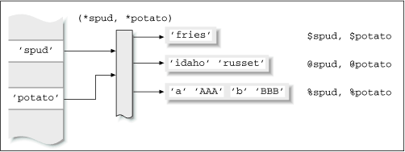
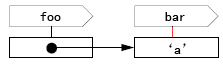

Category: Basic Keywords: Symbol Table
Guess the result
如果你知道下面这几段代码的结果是什么就不用看本文了。-
$bar = 'a'; *foo = *bar; { local $bar = 'b'; print $foo; }显示结果/Show result: b
-
$bar = 'a'; *foo = \$bar; { local $bar = 'b'; print $foo; }显示结果/Show result: a
$bar->{'t'} = 'a'; *foo = \$bar; { local $bar->{'t'} = 'b'; print $foo->{'t'}; }显示结果/Show result: b
-
$bar = a; *foo = *bar; { my $bar = b; print $foo; }显示结果/Show result: a
Reference
- Advanced Perl Programming:Chapter 3 Typeglobs and Symbol Tables
- http://www.perl.com/lpt/a/2002/05/14/mod_perl.html
- http://perldoc.perl.org/perlmod.html#Symbol-Tables
详细描述
符号表如上图所示，获取符号表里的值必须提供名字和类型两个参数。
首先谈 * 与 $\ 的区别：
*a = *b 后，你可以用 ($@%&)a 来得到 b 所有的变量，数组，散列，子程序，格式，文件句柄和文件句柄。
*a = \$b 只允许用 $a 得到 $b,而 @a 是不同于 @b 的。
举个简单的例子如下：
$a = 1;@a = qw/a b/;
*b = *a;
*c = \$a;
print join('-', $b, scalar @b, $c, scalar @c);
得到的结果为 1-2-1-0这是因为 $c 等同于 ${\$a} 所以与 $a 等价；而 @c 等同于 @{\$a} 而不能等同于 @a.
其次来讲讲 local 与 my 的区别：
local 能操作 symbol table而 my 不行，这就是代码1与代码4的区别。
加了注释的代码
-
$bar = a; *foo = *bar; # foo 是 bar 的别名 { local $bar = b; # local 能改变符号表里的名为bar类型为Scalar的值为 2 print $foo; # 求符号表中名为foo（对应到bar）类型为Scalar的值 } -
$bar = 'a'; *foo = \$bar; # 引用是让 foo 对应 $bar 的值 a，引用的特点是指向$bar变量的值而不是$bar变量的名字(bar) { local $bar = 'b'; # local 改变的是 $bar 的值 print $foo; # 根据引用对应变量值而非变量名的特点，foo 还是指向 a } # 将这面这段代码与下面的比较或许会明白一点 $bar = 'a'; $foo = \$bar; { local $bar = 'b'; print $$foo; # 这里输出的就是 a }The reference points to the value of $bar, not the variable itself or its name.
在local前，bar,foo的关系如图，在local后，就是图中的那条红线断了。foo指向的还是a.
关于引用更详细的资料，参见 Effective Perl - Reference $bar->{'t'} = 'a'; *foo = \$bar; { local $bar->{'t'} = 'b'; print $foo->{'t'}; } # 比较下面的代码： $bar->{'t'} = 'a'; $foo = \$bar; { local $bar->{'t'} = 'b'; print $$foo->{'t'}; # 这里输出的是 b }-
$bar = 'a'; *foo = *bar; { my $bar = 'b'; # my 不操作符号表, 符号表里名为bar类型为Scalar 值还是 1 print $foo; # 求符号表中名为foo（对应到bar）类型为Scalar的值 }